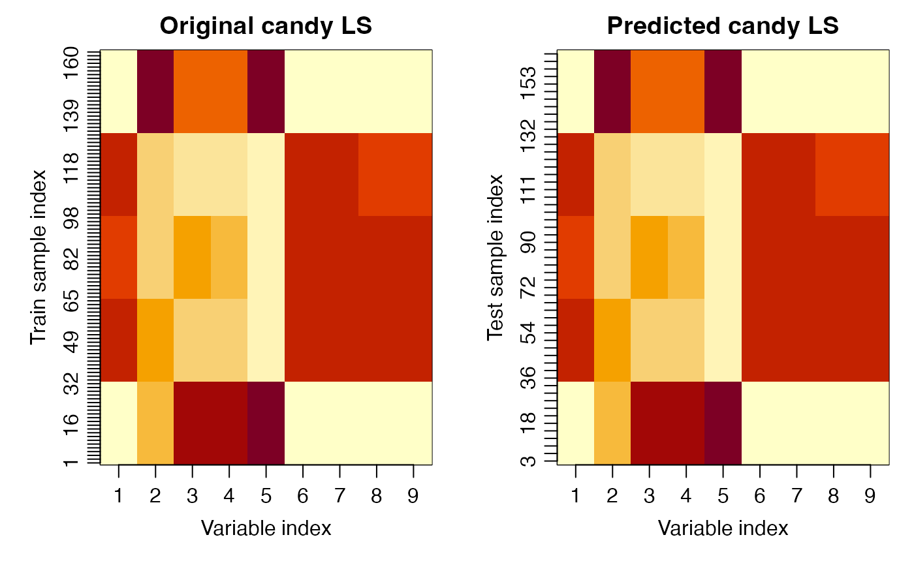

Reconstructs an HDANOVA-style object on newdata without refitting by
reusing stored coefficients and projection objects from the fitted model.
This implementation supports fixed-effects, mixed MoM (r() with
REML = NULL), and REML/ML mixed workflows (r() with
REML = TRUE or FALSE).
Usage
# S3 method for class 'hdanova'
predict(object, newdata, ...)Examples
data(candies)
# Train/test split (every third sample to test)
test_idx <- seq(3, nrow(candies), by = 3)
train_idx <- setdiff(1:nrow(candies),test_idx)
candies_train <- candies[train_idx, ]
candies_test <- candies[test_idx, ]
# Fixed-effects model prediction
mod <- hdanova(assessment ~ candy + assessor, data = candies_train)
pred <- predict(mod, newdata = candies_test)
var_idx <- seq_len(ncol(mod$LS$candy))
old.par <- par(mfrow = c(1,2), mar = c(4,4,2,1), mgp = c(2,0.7,0))
image(x = var_idx, y = seq_along(train_idx), z = t(mod$LS$candy),
xaxt = "n", yaxt = "n", main = "Original candy LS",
xlab = "Variable index", ylab = "Train sample index")
axis(1, at = var_idx, labels = var_idx)
axis(2, at = seq_along(train_idx), labels = train_idx)
image(x = var_idx, y = seq_along(test_idx), z = t(pred$LS$candy),
xaxt = "n", yaxt = "n", main = "Predicted candy LS",
xlab = "Variable index", ylab = "Test sample index")
axis(1, at = var_idx, labels = var_idx)
axis(2, at = seq_along(test_idx), labels = test_idx)

par(old.par)
# Mixed MoM model prediction (r() with REML = NULL)
mod_mom <- hdanova(assessment ~ candy + r(assessor), data = candies_train)
pred_mom <- predict(mod_mom, newdata = candies_test)
cat("Mixed MoM model prediction successful.\n")
#> Mixed MoM model prediction successful.
cat("SSQ names:", paste(names(pred_mom$ssq), collapse = "|"), "\n")
#> SSQ names: candy|assessor|Residuals
cat("dfDenom:", paste(pred_mom$dfDenom, collapse = "|"), "\n")
#> dfDenom: 95|95|0
# REML mixed model prediction (r() with REML = TRUE)
mod_reml <- hdanova(assessment ~ candy + r(assessor), data = candies_train, REML = TRUE)
#> boundary (singular) fit: see help('isSingular')
pred_reml <- predict(mod_reml, newdata = candies_test)
cat("REML mixed model prediction successful.\n")
#> REML mixed model prediction successful.
cat("SSQ names:", paste(names(pred_reml$ssq), collapse = "|"), "\n")
#> SSQ names: candy|assessor|Residuals
cat("dfDenom:", paste(pred_reml$dfDenom, collapse = "|"), "\n")
#> dfDenom: 95|95|0